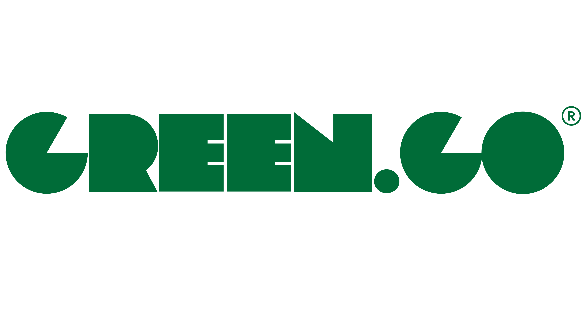

Pequenos hábitos diários, como o tempo no chuveiro, o transporte que você escolhe ou a quantidade de resíduos que gera, fazem toda a diferença. Mas como medir isso de forma simples e tomar decisões mais sustentáveis?
Nossa plataforma foi criada para ajudar você a entender e melhorar sua pegada ambiental, de forma prática e baseada em dados. Monitoramos seu consumo de água, energia, transporte e resíduos, transformando essas informações em insights personalizados e metas realistas.
Tome decisões inteligentes: Descubra onde você pode reduzir desperdícios e economizar.
Veja seu impacto em tempo real: Acompanhe sua evolução e compare com a média de outros usuários.
Receba recomendações práticas: Pequenas mudanças que fazem uma grande diferença.
O futuro sustentável começa agora, e você pode fazer parte dele.
Cadastre-se no GreenGo e dê o primeiro passo para um estilo de vida mais sustentável!
